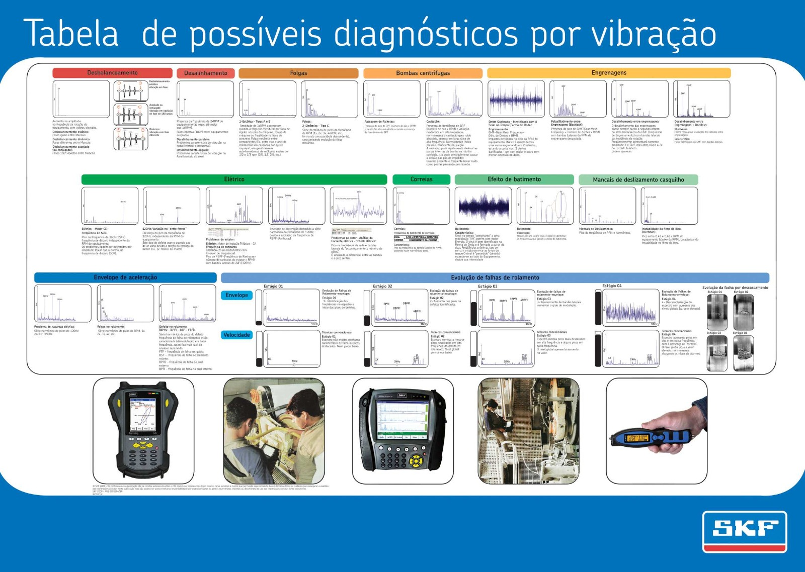

Referência rápida baseada na tabela técnica da SKF. Use a busca para achar um sintoma, ou filtre por categoria. O texto é nativo: amplie o quanto quiser que ele continua nítido.

Pôster técnico original da SKF (1600 × 1138 px). O conteúdo acima é a transcrição deste material em texto, para leitura nítida em qualquer zoom. Abrir em tamanho real ↗
Nenhum resultado para essa busca. Tente um termo mais curto, como “fase”, “harmônico” ou “envelope”.